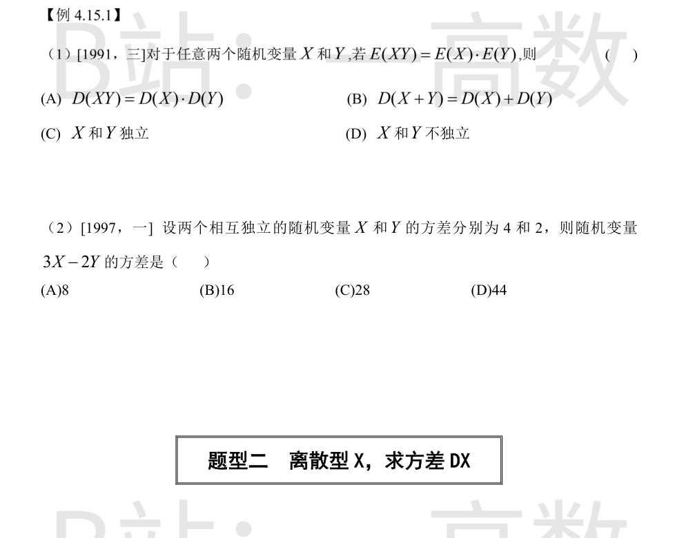
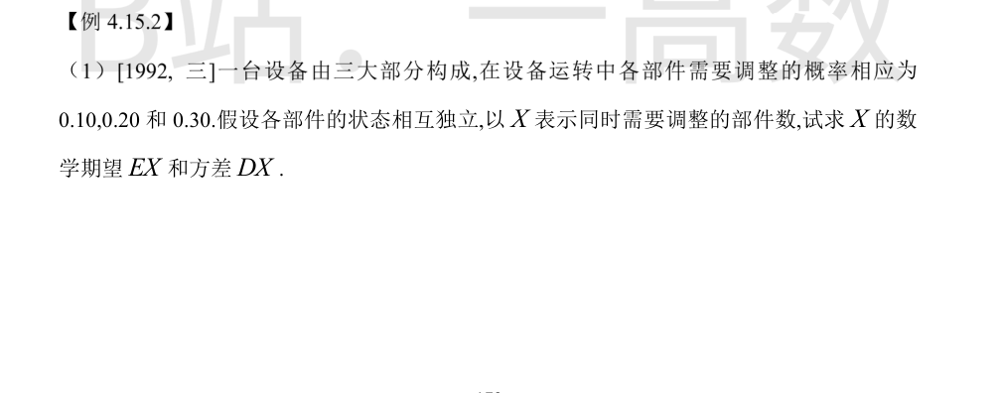
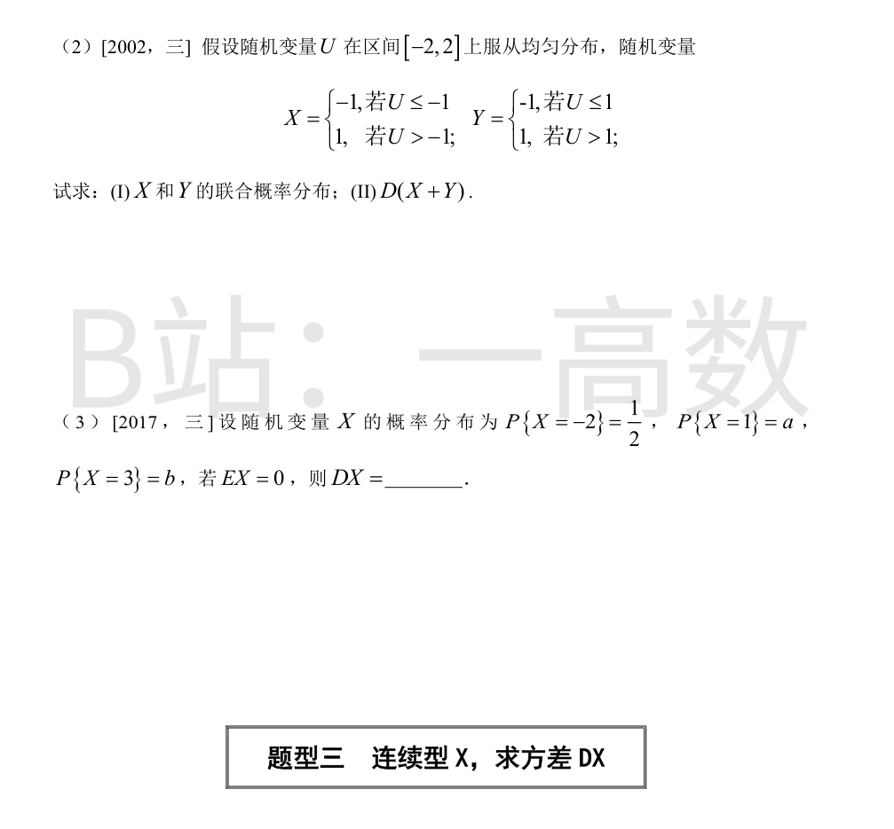
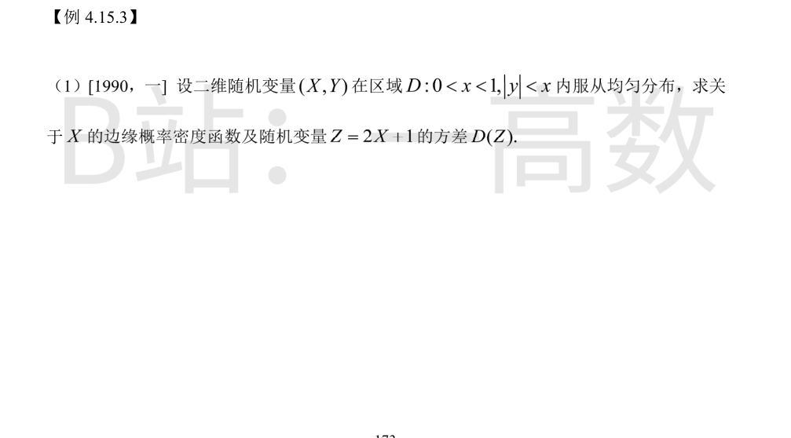
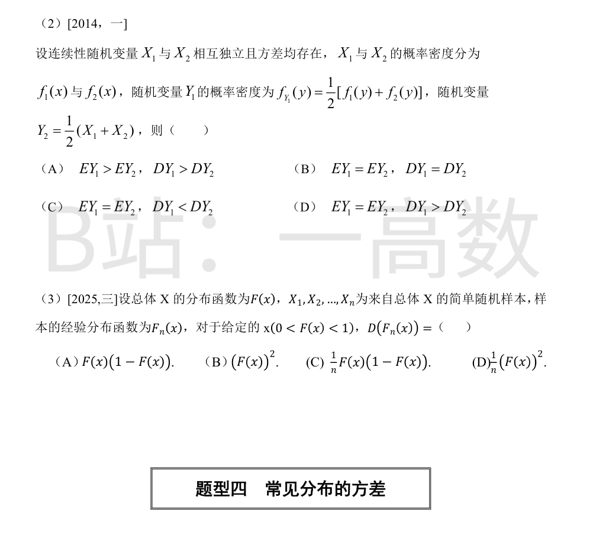
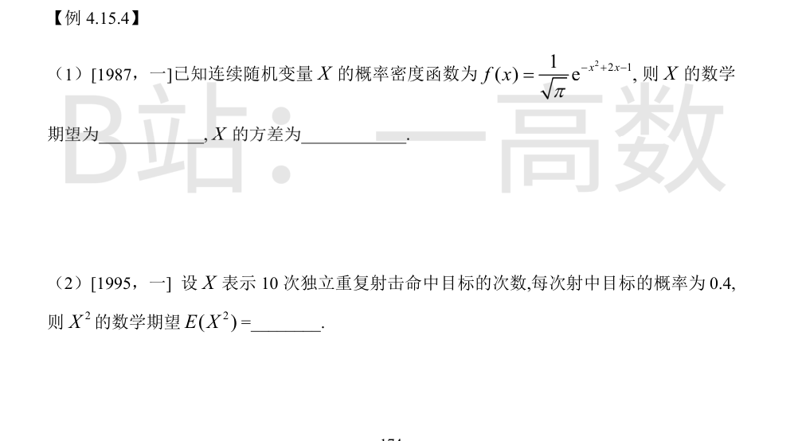
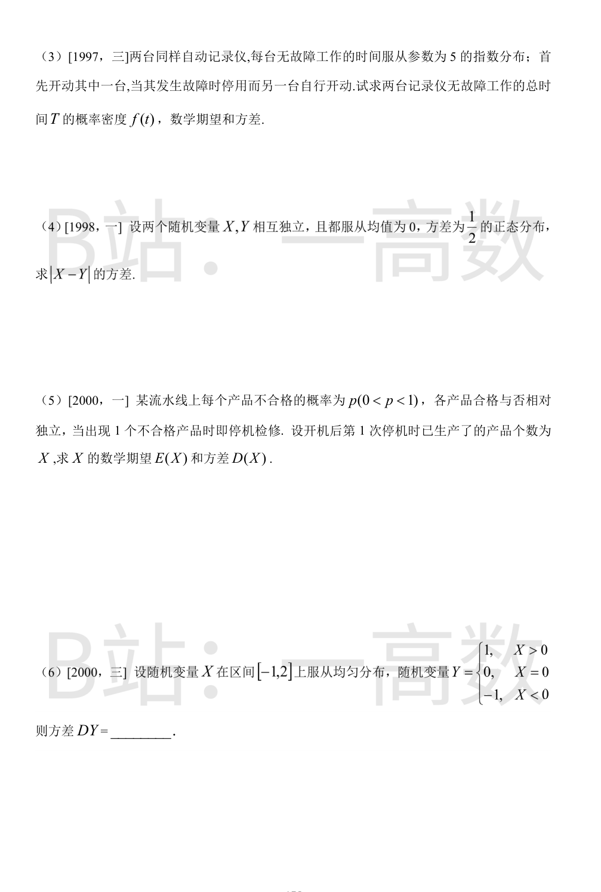

E(XY)=E(X)E(Y) 等价于 Cov(X,Y)=E(XY)-E(X)E(Y)=0，即 X 与 Y 不相关。
$$D(X+Y)=D(X)+D(Y)+2Cov(X,Y)=D(X)+D(Y),$$
故 (B) 必然成立。
不相关一般推不出独立：(C)(D) 均不必然（反例：X~U(-1,1)，Y=X²，此时 E(XY)=E(X³)=0=E(X)E(Y)，但 Y 由 X 完全确定，不独立）；(A) 亦无此性质。故选 (B)。
X,Y 独立 ⟹ Cov(X,Y)=0。
$$D(3X-2Y)=3^2D(X)+(-2)^2D(Y)+2\cdot3\cdot(-2)Cov(X,Y)=9\times4+4\times2=36+8=44.$$
故选 (D)。


设 X_i=第 i 部件是否需要调整（0-1 变量），P(X_1=1)=0.10，P(X_2=1)=0.20，P(X_3=1)=0.30，相互独立，X=X_1+X_2+X_3（注意 X 不是二项分布，因 p_i 不同）。
$$EX=\sum_{i=1}^3 EX_i=0.10+0.20+0.30=0.6,$$
$$DX=\sum_{i=1}^3 p_i(1-p_i)=0.10\times0.90+0.20\times0.80+0.30\times0.70=0.09+0.16+0.21=0.46.$$
（亦可列 X 的分布律 0,1,2,3 对应概率 0.504, 0.398, 0.092, 0.006 验证：EX=0.6，EX²=0.82，DX=0.82-0.36=0.46。）
U 的密度为 1/4（区间长 4），各概率按长度计算：
P(X=-1,Y=-1)=P(U≤-1)=1/4；P(X=-1,Y=1)=P(U≤-1 且 U>1)=0；
P(X=1,Y=-1)=P(-1<U≤1)=2/4=1/2；P(X=1,Y=1)=P(U>1)=1/4。
(I) 联合分布：
| X\Y | -1 | 1 |
|---|---|---|
| -1 | 1/4 | 0 |
| 1 | 1/2 | 1/4 |
(II) X+Y 取值 -2(概率 1/4)，0(概率 1/2)，2(概率 1/4)：
$$E(X+Y)=(-2)\cdot\tfrac14+0\cdot\tfrac12+2\cdot\tfrac14=0,\qquad E[(X+Y)^2]=4\cdot\tfrac14+0+4\cdot\tfrac14=2,$$
$$D(X+Y)=2-0=2.$$
（另法：EX=1/2，EY=-1/2，DX=DY=1-1/4=3/4，Cov(X,Y)=E(XY)-EX·EY=1/4+1/4=1/2-1/4=1/4，D(X+Y)=3/4+3/4+2·(1/4)=2。）
归一性：1/2+a+b=1 ⟹ a+b=1/2。
EX=-2·(1/2)+a+3b=0 ⟹ a+3b=1。
两式相减得 2b=1/2 ⟹ b=1/4，a=1/4。
$$DX=E(X^2)-(EX)^2=4\cdot\tfrac12+1\cdot\tfrac14+9\cdot\tfrac14-0=2+\tfrac{10}{4}=\tfrac{9}{2}.$$


区域 D 的面积 = ∫₀¹ 2x dx = 1，故联合密度 f(x,y)=1（在 D 内）。
$$f_X(x)=\int_{-x}^{x}1\,dy=2x,\quad 0<x<1.$$
$$EX=\int_0^1 x\cdot2x\,dx=\tfrac23,\qquad E(X^2)=\int_0^1 x^2\cdot2x\,dx=\tfrac12,$$
$$DX=\tfrac12-\tfrac49=\tfrac{1}{18},\qquad D(Z)=D(2X+1)=4DX=\tfrac{4}{18}=\tfrac29.$$
边缘密度在 x≤0 或 x≥1 处为 0。
记 E_i=EX_i，D_i=DX_i。
EY_1=\frac12(\int y f_1 dy+\int y f_2 dy)=\frac12(E_1+E_2)=EY_2，期望相等。
$$DY_2=\tfrac14(D_1+D_2).$$
$$E(Y_1^2)=\tfrac12\left(E(X_1^2)+E(X_2^2)\right)=\tfrac12(D_1+E_1^2+D_2+E_2^2),$$
$$DY_1=\tfrac12(D_1+D_2)+\tfrac12(E_1^2+E_2^2)-\tfrac14(E_1+E_2)^2=\tfrac12(D_1+D_2)+\tfrac14(E_1-E_2)^2.$$
于是
$$DY_1-DY_2=\tfrac14(D_1+D_2)+\tfrac14(E_1-E_2)^2>0,$$
（方差为正、E_1=E_2=E_1-E_2=0 时也因 D_1+D_2>0 而严格大于）故 DY_1>DY_2，选 (D)。
nF_n(x)=\sum_{i=1}^n I{X_i≤x}，各示性变量独立同 0-1 分布 B(1, F(x))，故 nF_n(x)~B(n, F(x))。
$$D(nF_n(x))=nF(x)(1-F(x))\ \Longrightarrow\ D(F_n(x))=\frac{1}{n^2}\cdot nF(x)(1-F(x))=\frac{1}{n}F(x)(1-F(x)).$$
选 (C)。


配方：-x²+2x-1=-(x-1)²。
$$f(x)=\frac{1}{\sqrt{\pi}}e^{-(x-1)^2}=\frac{1}{\sqrt{2\pi\sigma^2}}e^{-\frac{(x-1)^2}{2\sigma^2}}\ \Rightarrow\ 2\sigma^2=1,\ \sigma^2=\tfrac12,\ \mu=1,$$
（检验归一常数：\frac{1}{\sqrt{2\pi}\cdot(1/\sqrt2)}=\frac{1}{\sqrt\pi}，吻合）即 X~N(1, 1/2)。
故 EX=1，DX=1/2。
X~B(10, 0.4)：EX=10×0.4=4，DX=10×0.4×0.6=2.4。
$$E(X^2)=DX+(EX)^2=2.4+16=18.4.$$
设两台寿命 X_1,X_2 独立同分布，密度 5e^{-5x}(x>0)，T=X_1+X_2。由卷积公式，t>0 时：
$$f_T(t)=\int_0^t 5e^{-5x}\cdot5e^{-5(t-x)}\,dx=25e^{-5t}\int_0^t dx=25te^{-5t};$$
t≤0 时 f_T(t)=0（伽马分布 Γ(2,5)）。
$$E(T)=EX_1+EX_2=\tfrac15+\tfrac15=\tfrac25=0.4,\qquad D(T)=DX_1+DX_2=\tfrac{1}{25}+\tfrac{1}{25}=\tfrac{2}{25}=0.08.$$
独立正态的线性组合仍正态：Z=X-Y~N(0, D(X)+D(Y))=N(0,1)。
$$E|Z|=\int_{-\infty}^{+\infty}|z|\frac{1}{\sqrt{2\pi}}e^{-z^2/2}dz=2\int_0^{+\infty}z\frac{1}{\sqrt{2\pi}}e^{-z^2/2}dz=\sqrt{\tfrac2\pi},$$
$$E(Z^2)=D(Z)+(EZ)^2=1,$$
$$D(|X-Y|)=D(|Z|)=E(Z^2)-(E|Z|)^2=1-\frac{2}{\pi}.$$
X 服从几何分布：P(X=k)=(1-p)^{k-1}p，k=1,2,…。记 q=1-p。
$$E(X)=\sum_{k=1}^{\infty}kq^{k-1}p=p\cdot\frac{1}{(1-q)^2}=\frac1p.$$
（或用迭代：E(X)=1+qE(X) ⟹ E(X)=1/p。）
$$E(X^2)=\sum_{k=1}^{\infty}k^2q^{k-1}p=p\cdot\frac{1+q}{(1-q)^3}=\frac{1+q}{p^2}=\frac{2-p}{p^2},$$
$$D(X)=\frac{2-p}{p^2}-\frac{1}{p^2}=\frac{1-p}{p^2}.$$
P(X>0)=\frac{2-0}{3}=\tfrac23，P(X<0)=\frac{0-(-1)}{3}=\tfrac13，P(X=0)=0。
$$EY=1\cdot\tfrac23+(-1)\cdot\tfrac13=\tfrac13,\qquad E(Y^2)=1\cdot\tfrac23+1\cdot\tfrac13=1,$$
$$DY=1-\tfrac19=\tfrac89.$$